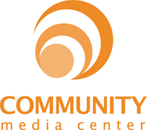

Grand Rapids Community Media Center

Website:
http://grcmc.org Location:
Grand Rapids, MI
Building Community Through Media.
For over 25 years CMC has maintained technology tools, media services and community venues to benefit Greater Grand Rapids. We are committed to leveraging these tools to make our community a better place today, and tomorrow.
We join with local individuals, organizations and institutions to create a reality in West Michigan where collectively and individually we are able to effectively use technology and media to:
* Tell, share and preserve our own stories
* Better understand our differences
* Discuss our challenges and develop solutions
* Encourage and exercise the free exchange of ideas
* Practice inclusiveness and empowerment
* Promote and enable social change
* Build collaborations and partnerships in pursuit of a better community.
Project Description:
Our newest project, for which a vista would help us build a sustainable structure, has received initial funding via the The Grand Rapids Community Foundation and the John S. and James L. Knight Foundation. The purpose is to establish four Neighborhood News Bureaus (NNB) in the city. The purpose is to increase citizen engagement and to encourage greater flow of meaningful information from and to our urban neighborhoods. The NNB project will give Grand Rapids citizens the opportunity to become citizen reporters with a soon-to-be established online and physical network of neighborhood news bureaus in the urban core. The CMC will give citizen reporters the tools, structure and mediums by which to gather, write and report on local news and events. Reporters will be able to produce news for the web, radio or TV through the use of CMC’s resources. NNBs will be physically located in known neighborhood gathering locations, and each site will be outfitted with video and still cameras, computers, audio recorders and templates plus the connectivity required to “file” stories to the web. Additional production equipment and facilities are available for citizen reporter use through the Community Media Center.
How you determined the need for this project:
The traditional methods of reporting local news are facing more and more challenges. We’ve seen our local daily newspaper go from four sections to two during the week and it is now consolidating with the papers in Kalamazoo and Muskegon. The Detroit Free Press will have home delivery only 3 days per week. The local network news is laying off staff and airing an ever increasing number of pre-packaged fill stories that have nothing to do with Grand Rapids, MI. This project will bring more media and technology services to our urban neighborhoods and help to increase the flow of local information from a local perspective to our citizens.
Why this project is timely:
Across the entire country, funding for local cable access television is at risk and the addition of neighborhood news bureaus will bring the CMC into a completely new area of communications expanding our capacity to serve the city of Grand Rapids in a whole new way. The CMC has been involved in ensuring that citizens have a voice for 25 years with the NNBs we are expanding that reach at a time where citizen journalism is coming into its own in progressive communities. There are more than 800 active citizen journalism outlets in the U.S. and the list is growing. Our project partner, the Grand Rapids Community Foundation, considers an increase in the flow of local news and information to be a core community need in pursuit of increased Civic Engagement; a key objective of the foundation.
• How the project would increase community engagement:
Since recently announcing the project, we have received literally hundreds of calls expressing interest in being part of the project. Currently many neighborhoods do not have the resources, training or skills needed to produce news stories about their neighborhoods. Often they are frustrated by the way traditional media outlets portray what is happening there. They have a strong desire to be able to tell these stories from their perspective. Each bureau will be initially staffed with a news team comprised citizens and college journalism/communication students who live and/or work in the neighborhood. As the projects grow, each will be encouraged to develop its own leadership/advisory board.
• How the project relates to other activities or elements of your organization or community:
Our mission statement is “Building Community Through Media” The word “Community” is defined as: a social group of any size whose members reside in a specific locality, share government, and often have a common cultural and historical heritage. It is our mission to help build stronger communities by bridging the digital divide, and by helping people and communities share their stories with others using CMC services and resources.
The addition of a CTC VISTA member would provide a much needed staff person to help design and establish sustainable structures for the NNB project. While a Knight grant was indeed awarded to this project, all grants in this cycle were reduced by 40% due to the current economic climate. The VISTA member would help use move forward, as planned and would be a main support person for development of the local NNB locations. The work would include neighborhood outreach, collecting and organizing training materials, doing initial set up and organization of NNB’s and creating materials for use in story management and distribution for later use by editors and news gatherers.
Each bureau will be initially “staffed” with a news team comprised of neighborhood residents and college journalism/communication students. As the projects grow, each will be encouraged to develop its own leadership/advisory board. The VISTA member will help ensure high quality and fairness in the program by establishing a pool of professionals to provide training to participants.
Additionally, VISTA will help establish a structure and methods for collecting and maintaining a neighborhood information “bank” for use by the news bureaus.
Project Tangibles:
As a demonstration project for citizen journalism and increased citizen engagement through media and technology, it is expected that models and practices developed will provide leadership and tools for other communities. Indeed, the Knight Foundation funds come with an expectation the we act as mentors to future community growth projects that employ new media. The web based infrastructure will be open source based and sustainability lessons will be available to others. Locally, stories produced through the New Bureau projects will be broadcast on our noncommercial television and radio stations and made available to local network stations.
Supported Projects
Neighborhood News Bureau Community Journalism Project lead
Denise Cheng
9/2009 — 9/2010
Our newest project, for which a vista would help us build a sustainable structure, has received initial funding via the The Grand Rapids Community Foundation and the John S. and James L. Knight Foundation. The purpose is to establish four Neighborhood News Bureaus (NNB) in the city. The purpose is to increase citizen engagement and to encourage greater flow of meaningful information from and to our urban neighborhoods. The NNB project will give Grand Rapids citizens the opportunity to become citizen reporters with a soon-to-be established online and physical network of neighborhood news bureaus in the urban core. The CMC will give citizen reporters the tools, structure and mediums by which to gather, write and report on local news and events. Reporters will be able to produce news for the web, radio or TV through the use of CMC’s resources. NNBs will be physically located in known neighborhood gathering locations, and each site will be outfitted with video and still cameras, computers, audio recorders and templates plus the connectivity required to “file” stories to the web. Additional production equipment and facilities are available for citizen reporter use through the Community Media Center.
The addition of a CTC VISTA member would provide a much needed staff person to help design and establish sustainable structures for the NNB project. While a Knight grant was indeed awarded to this project, all grants in this cycle were reduced by 40% due to the current economic climate. The VISTA member would help use move forward, as planned and would be a main support person for development of the local NNB locations. The work would include neighborhood outreach, collecting and organizing training materials, doing initial set up and organization of NNB’s and creating materials for use in story management and distribution for later use by editors and news gatherers.
Each bureau will be initially “staffed” with a news team comprised of neighborhood residents and college journalism/communication students. As the projects grow, each will be encouraged to develop its own leadership/advisory board. The VISTA member will help ensure high quality and fairness in the program by establishing a pool of professionals to provide training to participants.
Additionally, VISTA will help establish a structure and methods for collecting and maintaining a neighborhood information “bank” for use by the news bureaus.
Primarily, the Vista will be working on the establishment of the physical neighborhood news bureaus. They will be responsible for helping set up the physical and technical structure and coordinating with an initial corps of trainers to provide training for the neighborhood.
The Vista will work with our core NNB steering group and committees to carry out the the project development plan. Work will include relationship building with potential host sites, arranging for assistance for chosen sites; working with the journalists committee to identify training needs and develop a curriculum and recruit presenters; working with the PR committee to prepare our news bureau community launch activities: utilize social media frameworks to increase interest and connect with potential partners; develop user feedback mechanisms; and will produce user guidelines and other reference pieces to aid in community access and use of the site.
Goal 1: To help the CMC fulfill its mission of “Building Community Through Media” through the development of a Neighborhood News Bureaus.
Goal 2: To help the CMC be an ever more active presence in the Grand Rapids area as a vital resource for free speech and information about what’s happening from the citizen’s point of view.
The primary goal was for Denise to help “design and establish sustainable structures for the” Neighborhood News Bureau project…now called the Rapidian. Denise has done an outstanding job at reaching out to the community to gather input, creatively think through the citizen reporting process and create procedures, structures and partnerships that support those processes. She has organized training materials and events; evaluated and revised methods, and researched other “best practices” bringing those lessons to bear on The Rapdiian project. Denise worked effectively in a team that included a drupal developer, a content coordinator (part time), the design manager and the publisher. As the only person dedicated FULLTIME to the launch and evolution of the project, Denise has taken an inspiring leadership role, allowing us to reach farther into the community and engage new participants.
We have expanded our reach and perceptions of relevance in the community (for the good). Mainstream/traditional media now includes us in discussions; promotes our work and even seeks our input and advice as they look to expand their use of community reporters. We a re currently working on the development of a business model to sustain the work, however, our “user engagement numbers” are significant.
The project was sufficiently open ended enough to allow Denise great creativity to design execution plans. But in addition to The Rapidian proper, she has extended a connection to our community radio station and represents the Rapidian weekly on-air. She has also established a drupal working group in our community.
Youth Media Program Coordinator
Sarah Pierantoni
6/2007 — 6/2008
Our Community Media Center is a cooperative of public access, nonprofit media including, GRTV, WYCE, GrandNet, the Grand Rapids Institute for Information Democracy (GRIID), the Mobile Learning Lab for Information Educaiton (MOLLIE) and the Wealthy Theater. We provide individuals and groups with access to the tools training and means of transmission they need to join our mission of “Building community through media”.
Our VISTA member will assist in video and other media productions, primarily with the Mobile Learning Lab for Information Education (MoLLIE). MoLLIE works in large part with youth in the local financially struggling school system to help teachers fulfill curriculum requirements while also teaching the students the skills of video production using digital video cameras and iBook computers for editing.
Over the course of Sarah’s Vistaship she has been instrumental in working with our various youth training programs providing a wide variety of skills. She was responsible for helping students make the best videos possible and teaching them to think critically about media and media messages. She took the initiative to outreach to communities we hadn’t worked with in the past including GLBT and the Triangle Foundation, and solidified relationships with them and our organization. She helped plan a film festival and worked on several video installations dealing with issues such as the war and discrimination. In addition, Sarah has helped out in our theater by operating the lighting board for concerts, selling tickets and running concessions. She teaches video production and editing classes to our members and so much more.
Here is a list of projects Sarah was involved in during her VISTA year:
1.Allegan County Community Mental Health: produced, shot and edited a documentary about the stigma of mental illness.
2. G.E.T. Girls Empowering Together: since January worked with a group of High School girls in a leadership mentoring program to mentor, produce, shot and edit a documentary about the program, “Breaking the Surface,” available for viewing at www.archive.org
3. The MOLLIE Club: a weekly video club for students in middle School that provides an opportunity for them to come in and Make videos.
4. MOLLIE (Mobile Learning Lab for Information Education): Went to area schools and non-profits teaching youth how to produce, shoot and edit videos.
5. Real Pride: helped start the planning process for a film and documentary series about LGBT issues.
“Sarah had an especially strong bond with [the G.E.T. program participants] and it was great to see their reaction to the documentary we helped them produce. They had a really fancy dinner with a lot of area dignitaries in attendance when the documentary was screened for the first time. Many commented to us afterwards about what a great project this was and committed to funding another program this year.”
- Gretchen Vinnedge, supervisor
Mobile Learning Lab Youth Outreach Coordinator & Teacher
Richard T. Anderson
9/2006 — 9/2007
Richard was a crucial part of the Mollie youth video team, providing youth access and exposure to digital video technology during Mollie moviemaking video projects with schools and community groups. Richard was especially instrumental in the use of digital audio technology, integrating audio technology into the Mollie youth projects and other GRCMC departments.
Richard assisted the education department with youth outreach curriculum development efforts, developing innovative ways to expose community youth to digital audio and video technology. He developed interest surveys for school and community info. gathering and assisted with the implementation of an open house for CMC Wealthy neighborhood residents. Richard was a member of the SMART Festival planning team, an international student media arts festival organized and hosted by GRCMC..
A particular story that stands out is the use of audio resources and curriculum developed by Richard: There was a young man named Patrick who was 14 years of age and lived across the street from Media Center with his Mom and 6 brothers and sisters. He would drop by the media center often after school. He learned a variety of video production skills and produced a few short studio productions for air on community television, but nothing seemed to really stick with him. One day we asked him to produce and record a rap that could be used for promotion of the Mollie youth program. You could see the excitement in his eyes at that suggestion. In a matter of weeks he had the rap written out and beats to use with it created on the computer. Using the tools and resources Richard had collected and organized, we were able to both find a passion for this young man and help promote our programs and organization.
Mobile Learning Lab Trainer/Technician
Abby Balazs
9/2004 — 9/2005
Abby’s year with the Mobile Learning Lab for Information Education (MoLLIE) was characterized by a transition of the project from a previous role of working in traditional classrooms to a new service area involving after-school programming for at risk children. Over half of the jobs MoLLIE took in the 2004-05 school year were at after school centers run by the School district in conjunction with the city Parks and Recreation Department.
MoLLIE taught participating children how to write, shoot, and edit, for cablecast, their own curriculum-linked skits, PSAs, and mini documentaries. As a MoLLIE trainer/technician, Abby was essential to the success of those programs.
Other ongoing projects that Abby was crucial to the success of included:
- “Project Safe Neighborhoods” (U.S. Department of Justice) in which Abby facilitated the efforts of local youths at neighborhood associations and community centers in writing, shooting, performing, and editing their own Public Service Announcements (PSAs) on the subject of gun violence prevention.
- Wedgwood Christian Services of West Michigan. Similar to PSN, the Wedgwood project involved providing at-risk teens with the tools, training, and means of transmission to create their own mini documentaries and PSAs focusing on substance abuse prevention.
Both of these long term projects have been very successful due in large part to Abby’s commitment, diligence, professionalism, expertise, and willingness to work with at risk teens.
Abby’s final, and perhaps most lasting project, done in conjunction with previous VISTA/Americorps volunteers Laura Craig-Bennett, Amy McKenzie, and Jennifer Harris, has been the editing of a four-episode series of documentaries entitled “Girls to Governors” which commemorates the role of Michigan women in politics. Funded locally by the Nokomis foundation of Grand Rapids, the VISTA/Americorps producers of “Girls to Governors” seized upon the election in 2001 of Michigan’s first female governor, to examine the emerging role of women in local, state, and national politics and public service.
The editing of this series was the capstone event in and outstanding year of service provided by VISTA volunteer Abby Balazs. The VISTA program should be very proud to have Abby as an alumnae just as we are proud to have had her as an employee and team mate.
Abby brings with her a high degree of expertise in her field which she is eager to share with students and colleagues alike. She is enthusiastic and very effective as a teacher, especially in a one-on-one setting. She has a warmth and a focus that children are very responsive to. Abby is setting a very high standard of performance in all aspects of her job with MoLLIE, and I am happy to have her as a member of the team.
Outreach Coordinator
Tom Schwallie
8/2003 — 8/2005
In building the capacity of the Grand Rapids Institute for Information Democracy, Tom took on the following responsibilities:
Media Monitoring – this includes daily logging of local news coverage for the studies that GRIID produces yearly on election coverage, race & gender representation, and any other issue that we may be monitoring. This may also include occasional monitoring of entertainment media; commercials, movies, ads, etc.
Grant Funded Projects – this includes assisting GRIID on grant funded projects that involve working with students and community groups on issues such as tobacco, gender issues and the West Michigan Progressive Directory. This work gives us an opportunity to apply the resources developed in the media monitoring process.
Web Site Maintenance and Design – Tom has learned some of the basics of web design and has helped update and create new content for the GRIID website (www.griid.org). In particular, he updated the GRIID media directory and the GRIID lending library pages. Tom also designed and created his AmeriCorps VISTA web page (www.grcmc.org/americorps/tom/).
Community Outreach Projects – working on various community-based projects that GRIID is involved in through the Progressive Directory. This involves attending meetings, conducting media trainings, producing media with community groups, and promoting the coalition building through the Progressive Directory. In many ways this is the main outcome goal of GRIID – getting community groups to develop their own media strategies.
Tom played an essential role in completing the Youth Anti-Tobacco Advocacy Project (http://www.griid.org/antitobacco/) He collected and correlated all the data for this study and created the online report. He also worked with the student volunteers in creating the study and accompanied them when they presented the study to the Grand Rapids City commission. Tom also helped in the creation of several grant-funded video productions that GRIID produced, assisting in both the editing and the filming process.
Tom does about half of the actual news watching that GRIID undertakes, and is responsible for documenting and tabulating all of the news watching data collected. He also has taken an active part in writing GRIID studies examining local media coverage on various issues. Over the last six months, Tom played a significant role in creating the content in GRIID’s Election Watch 2004 feature.
Tom worked on the grant funded Video Voter Project. This project tied into GRIID’s election monitoring and education efforts. Tom’s work monitoring and documenting news coverage were important components of the Video Voter Project.
Tom has been involved in several projects designed to reach out and empower community groups. Tom has been one of the producers of Catalyst Radio, a weekly radio program on the CMC’s radio station WYCE FM. Catalyst Radio provides news analysis and interviews featuring local community groups and organizations. Tom writes half of the news analysis pieces as well as being one of the shows on-air voices. He also is responsible for setting up and conducting the interviews on occasion as well as updating the Catalyst Radio website every week.
Another community outreach effort that Tom has been involved with is GRIID’s work on FCC license renewals procedure education. This is an effort to build an awareness in the community on the FCC license renewal process which was designed to hold the local TV media accountable to community needs. As part of this project, Tom has given presentations, created mailing literature, and helped create online resources.
GRIID maintains a large collection of documentaries pertaining to issues of media literacy and media and democracy. Tom has helped organize and promote public showings of these documentary films. Tom also helped facilitate public discussions following the films.
Video Production Training and Technical Support
Laura Craig
8/2003 — 8/2004
Trainer/Technician Workplan
Within One week of employment:
- fill out all necessary forms with the Community Media Center human resources department.
- familiarize herself with the employee manual and the responsibilities of her job
- tour and become familiar with the MoLLIE workspace(s)
- be introduced to MoLLIE and CMC staff.
- familiarize herself with the mission, policies, routines, and schedule of the MoLLIE program
Within One month of employment:
- become proficient operating digital video equipment and accessories
- become proficient with the i-movie editing program
- begin field work with clients - schools and NPOs
Within Two months of employment
- understand and accept the responsibilities as team captain
- provide proficiency training for new hires
Laura’s year with the Mobile Learning Lab for Information Education (MoLLIE) was characterized by a continued maturing of the of the project, both in its partnerships with area schools and its facility with linking MoLLIE efforts to the area mandated curriculum. Relationships that were begun with area teachers in our first two years of operation continued and thrived. Those teachers that utilized MoLLIe in the first year actively promoted the MoLLIE project to their colleagues leading in turn, to an expanded clientele of teachers in a broader selection of schools.
Further relationships developed that Laura was crucial to: In conjunction with the U.S. Department of Justice “Project Safe Neighborhoods” (PSN) program, Laura facilitated the efforts of local youths at neighborhood associations and community centers in writing, shooting, performing, and editing their own Public Service Announcements (PSAs) on the subject of gun violence prevention. Another partnership that developed this year in which Laura played a key role was a six month project with Wedgwood Christian Services of West Michigan. Similar to PSN, the Wedgwood project involved providing at-risk teens with the tools, training, and means of transmission to create their own mini documentaries and PSAs focusing on substance abuse prevention. Laura demonstrated a particular facility in getting young women to open up and tell their personal stories in a manner that they might not with male trainer/technicians.
Laura’s final, and perhaps most lasting project, done in conjunction with VISTA volunteer Nate Diedrich, has been the production of an eight-episode instructional module series on the MoLLIE method of video production.
Laura Craig went on to work full-time at Portland Community Media in Portland, Oregon, where she supervised the work of Digital Arts Corps Member Nickey Robare.
Laura performed superbly in all aspects of her job with MoLLIE. I am particularly pleased that she is being considered for employment as the project manager of a new MoLLIE-like project in the Pacific Northwest. The VISTA program should be very proud to have Laura Craig-Bennett as an alumna just as we are proud to have had her as an employee and team mate.
Video Production Training and Technical Support
Nate Diedrich
8/2003 — 8/2004
Nate contributed to the MoLLIE project (Mobile Learning Lab for Information Education) as trainer/technician . MoLLIE provides area teachers and schoolchildren with the training, tools, and means of transmission, to write, shoot, edit, and cablecast their own curriculum-linked video presentations. Nate had worked with MoLLIE prior to his tenure as a VISTA volunteer and was very familiar with the staff, procedures, equipment, and mission of the program.
Workplan
Within One week of employment:
- fill out all necessary forms with the Community Media Center human resources department
- familiarize himself with the employee manual and the responsibilities of his job
- tour and become familiar with the MoLLIE workspace(s)
- be introduced to MoLLIE and CMC staff.
- familiarize himself with the mission, policies, routines, and schedule of the MoLLIE program
Within One month of employment:
- become proficient operating digital video equipment and accessories
- become proficient with the i-movie editing program
- begin field work with clients - schools and NPOs
Within Two months of employment
- understand and accept the responsibilities as team captain
- provide proficiency training for new hires
Nate’s year with the Mobile Learning Lab for Information Education ( MoLLIE) was characterized by a continued maturing of the of the project, both in its partnerships with area schools and its facility with linking MoLLIE efforts to the area mandated curriculum. Relationships that were begun with area teachers in our first two years of operation continued and thrived. Those teachers that utilized MoLLIE in the first year actively promoted the MoLLIE project to their colleagues leading, in turn, to an expanded clientele of teachers in a broader selection of schools.
Further relationships developed that Nate was crucial to. In conjunction with the U.S. Department of Justice Project Safe Neighborhoods (PSN) program, Nate facilitated the efforts of local youths at neighborhood associations and community centers in writing, shooting, performing, and editing their own Public Service Announcements (PSAs) on the subject of gun violence prevention. Another partnership that developed this year in which Nate played a key role was a six-month project with Wedgwood Christian Services of West Michigan. Similar to PSN, the Wedgwood project involved providing at-risk teens with the tools, training, and means of transmission to create their own mini documentaries and PSAs focusing on substance abuse prevention.
Nate’s last and perhaps most lasting project, done in conjunction with VISTA volunteer Laura Craig-Bennett, has been the production of an eight episode instructional module series on the MoLLIE method of video production.
With his ready wit and disarming personality Nate easily wins over our student clients. Nate has developed into an outstanding teacher, through a conscious effort on his part to constantly look for better techniques and a continual honing of his own considerable teaching skills. He has excellent instincts in the classroom.
Youth Learning and Cablecast Development
Amy McKenzie
9/2002 — 9/2003
This month will end the VISTA tenure of Amy McKenzie with the Mobile Learning lab for Information Education (MoLLIE) of Grand Rapids Community Television (GRTV).
Amy’s year with MoLLIE was characterized by a maturing of the project, both in its partnerships with area schools and its facility with linking MoLLIE efforts to the area mandated curriculum. Relationships that were begun with area teachers in our first year of operation continued and thrived. Those teachers that utilized MoLLIe in the first year actively promoted the MoLLIE project to their colleagues leading in turn to an expanded clientele of teachers in a broader selection of schools.
Amy played a crucial role in this path to success for the MoLLIE project. She produced an eight minute promotional DVD for the MoLLIE project. The DVD has been extensively utilized over this past year to immediately familiarize area teachers, principals, and school administrators with the educational services provided by MoLLIE. Amy’s production has been crucial in spreading the word in our community of the availability and the successes of the MoLLIE project. Not only is the promotional DVD an accurate portrayal of the efforts of the MoLLIE project but it also represents the talents of Amy as a film and video artist. This year, in national competition, Amy’s DVD won the Alliance for Community Media award for documentary video.
Amy has also provided stellar service to MoLLIE by producing for cablecast a weekly program entitled MoLLIE Matinee, a showcase of the works of students and NPOs produced with MoLLIE assistance. By the end of this reporting period there were 44 thirty-minute episodes of MoLLIE Matinee, with more in production.
The MoLLIE office underwent major changes this summer with increases in staff and a move to a much larger office. Amy did a superb job of handling the logistics of the move as well as developing and implementing new organizational procedures for all aspects of the operation, including staff, equipment, and scheduling.
Additionally, Amy has taken charge of making sure that the work on each project in completed, compiled, put to tape, and aired on GRTV as part of “MOLLIE Matinee” which airs every Tuesday at 3:30 p.m. In many ways, the most important part of the video process (including script, story board, shooting, and editing) is watching the final product air on TV, and Amy makes sure that this part happens each week.
Finally, though it hasn’t been mentioned the biggest part of Amy’s work (as it is with every member of our team) is going to the schools and after-school centers and working directly with the students. Amy has a gift for working with students, and a strong background in video production that results in both high-quality student videos and high-impact learning.
Amy’s professionalism, demeanor, talent, and organizational skills have secured her a full-time position with GRTV to continue on as the office manager and instructor for the MoLLIE project upon the expiration of her VISTA tenure.
As a long time supervisor and department head, I have seldom had a team member that consistently performs at the high levels of excellence as does Amy McKenzie. The VISTA program should be very proud to have her as an alumna.
Marketing and Outreach Coordinator
Jason Crow
6/2001 — 6/2003
One of the many capacity building functions Jason has provided has been with media support for a brand new federally funded grant project MOLLIE. Working with the CMC video artist in residence, Jason produced a promotional video that will help insure the future of this fledgling project that is only funded for a year. In addition, he extended GRTV outreach efforts by providing much needed video help to local non-profits who otherwise could not afford it.
Jason became a key participant in making our Spring Alliance for Community Media conference a success. With his local connections with artists, Jason put on an art installation that included a live broadcast on Channel 24 Livewire, interactive wireless video transmission, and addressed contemporary issues with technology and community development/education.
His most recent contribution to the future of this organization, relates to his new job description. As Public information officer, Jason is using his graphic design skills to create a new”image and look” for the CMC. Now we have someone doing regular press releases, sending out event information to local calendars, and supporting the CMC outreach efforts. The CMC looks forward to Jason’s second year of service.
Public Information Officer
Jason Crow
6/2002 — 6/2003
The last few months have brought about many new challenges for our seasoned VISTA veteran. Now fully operating under the umbrella of the CMC as my special staff person, Jason has worked on coordinating many of our Public Relations and Marketing efforts. He has been instrumental in establishing a presentation standard for CMC tours, which are happening more regularly under his watch. He has created a routine press release mailing that has resulted in continuing media interest and exposure in CMC activities.
Jason has been instrumental in coordinating the special events that CMC has sponsored or hosted. He has willingly shouldered the duty of making appearances at public functions as the CMC representative, recently meeting the esteemed Governor of Michigan, Jennifer Granholm, the morning after her State of the State Address.
Other special events include the nationally recognized educational broadcast of the JASON XIV Project. This weeklong workshop was at held at local gathering place Celebration Cinema where Jason led the CMC’s presence, reaching out to the youth of our community. This high-profile event that was attended by many of Kent County’s eight graders and was broadcast 24/7 on GRTV’s second channel LiveWire.
Most recently, Jason coordinated a visit from Detective Sullivan (Oprah Winfrey, the Today Show, and others have featured his new book and software), who teaches Cyber-Safety to school children and their parents. In addition to his interview during drive-time on WYCE 88.1FM, our sponsorship of his visit has resulted in exposure in the Grand Rapids Family Magazine.
Jason has helped the CMC become the production house for the statewide broadband mapping initiative “LinkMichigan.” He designed the LinkMichigan brochure and has recently taken over the large task of redesigning the “FREE Internet Access” brochure that includes a map, location, and hours for every public Internet Access site in Barry, Ionia, and Kent Counties. When finished, this brochure will be featured as part of a large marketing campaign funded by the state to promote already existing Internet Access sites and Community Technology Centers in the area.
Media Literacy Curriculum Development
Erica Freshour
2/2001 — 2/2003
Erica continues to be instrumental in the daily work of GRIID (Grand Rapids Institute for Information Democracy).
List of Projects/work description
Teen Mother’s Media Project
a.assisting in video camera and video editing instruction of teen mothers
b.developing weekly video exercises
c.assisting in script writing
Young Women for Change - Sexually Toxic Media Project
a.Assisting in video camera and video editing instruction of teenage women
b.Developing media literacy exercises for the participants
c.Gathering examples for the media literacy exercises from TV, ads and films
d.Facilitating discussion with participants
Anti-Tobacco Youth Project
a.Assisting in video camera and video editing instruction of teenage women
b.Developing media literacy exercises for the participants
News Monitoring Project
a.2 days a week of watch & logging data from three and one-half hours of local TV news
b.Assisting in writing reports
Six Month Movie Content Analysis Study
a.Watching 50 movies, logging data and editing clips
b.Assisting in editing films clips by themes
Erica continues to be instrumental in the daily work of GRIID. She takes on 50% of the news monitoring work, community networking, media literacy workshops and grant-funded projects. Erica has also been instrumental in assisting with the creation of GRIID instructionals and video editing work that is essential to much of the GRIID work.
Program Building
Daniell Krawczyk
8/2001 — 8/2002
Daniell’s entire term was devoted to the creation, expansion, and future sustainment of the MOLLIE Project. MOLLIE (which stands for Mobile Learning Lab for Information Education) was developed through a grant from the Federal Department of Education and exists to bridge the digital divide, primarily by teaching video production in schools, drop-in centers, and neighborhood centers.
He was given the primary responsibility of getting the program off the ground, including designing the logo, acquiring the equipment, creating the protocols, giving presentations, and implementing the program in the field. These were his foremost foci for the first six months of his term. The second half of his term centered on keeping the project afloat.
The number of schools and non profit organizations that MOLLIE was serving rose significantly throughout the early Spring, necessitating an exponential staff expansion. Though this increased the number of hours Daniell spent directly teaching video production at schools and community organizations, it also allowed him to focus his time back at the office on the following issues:
- the temporary and permanent storage of digital video,
- the development of a long-distance, high-speed, fixed-point, wireless network, and most importantly,
- the future sustainability of the program.
At the completion of his term, Daniell was hired full-term by the Media Center as the MOLLIE Technology Coordinator.
As part of the sustainability plan for the project, Daniell has recruited an Americorps VISTA volunteer (Amy McKenzie) that has filled the position he left vacant when he became full-time staff at the end of his term. He is currently serving as Amy’s direct supervisor.
Related Content
None created yet!